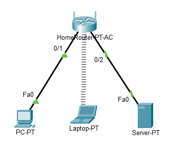
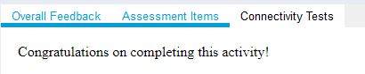

SOHO netwerk
De afkorting SOHO staat voor Small Office Home Office: een kleine kantoor- of thuiskantooromgeving met een tiental gebruikers. In deze oefening bouw en configureer je er zelf een.
Download het startbestand en open het in Cisco Packet Tracer.

Router
Configureer de router als volgt.
- Basic setup: IP 192.168.1.1, subnetmasker 255.255.255.0, DHCP van 192.168.1.10 tot en met 192.168.1.59
- Basic wireless settings: frequenties 2,4 GHz, 5 GHz 1 en 5 GHz 2, SSID
automatisering - Beveiliging: WPA2 met AES, wachtwoord (PSK)
automatisering
Laptop, pc en server
- De laptop maakt draadloos verbinding met SSID
automatiseringen krijgt zijn IP-configuratie via DHCP. - De pc maakt bekabeld verbinding met de router en krijgt zijn IP-configuratie via DHCP.
- De server maakt bekabeld verbinding met de router en krijgt een statische configuratie: IP 192.168.1.2, subnetmasker 255.255.255.0, default gateway 192.168.1.1.
Controleren
Ben je klaar, klik dan op Check Results in het venster van de oefening.

